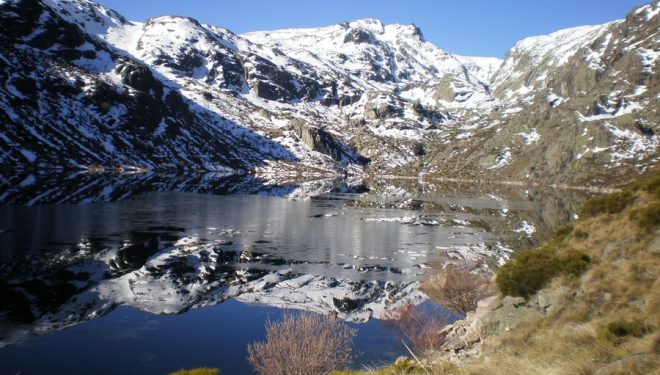
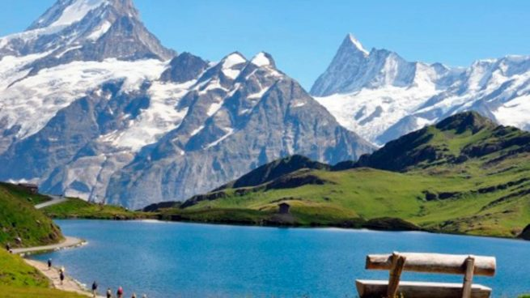
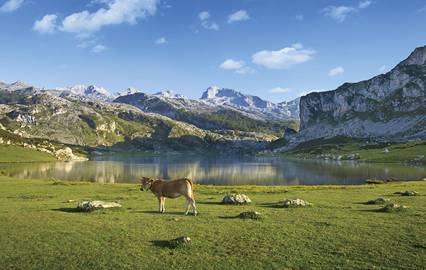

 La Sierra de Gredos es una sierra de España perteneciente al Sistema Central, situada entre las provincias de Ávila, Cáceres, Madrid y Toledo. Su máxima altitud se da en la provincia de Ávila en el Pico del Moro Almanzor a 2592 m, que divide los términos municipales de Zapardiel de la Ribera y Candeleda. Está declarada parque regional. Gredos es una de las sierras más extensas del Sistema Central y está compuesta por cinco valles fluviales: Alto Tormes, Alto Alberche, Tiétar Oriental, Tiétar Occidental y la Vera, y Valle del Ambroz.
 Los Pirineos o el Pirineo es una cordillera montañosa situada al norte de la península ibérica, que hace de frontera natural entre España y Francia. Se extiende en dirección este-oeste a lo largo de 430 km, desde el cabo de Creus en el mar Mediterráneo hasta su unión con la cordillera Cantábrica, donde se ha establecido la falla de Pamplona como su límite convencional geológico, no existiendo interrupción geográfica entre ambas formaciones. En su parte central tiene una anchura de unos 150 km.
 Los Picos de Europa son un macizo montañoso localizado en el norte de España que pertenece a la parte central de la cordillera Cantábrica. Aunque no muy extenso, su cercanía al mar hace que sea pródigo en accidentes geográficos de gran interés. En la actualidad el Parque nacional de los Picos de Europa constituye el segundo parque nacional más visitado de España, después del Parque nacional del Teide (Tenerife).